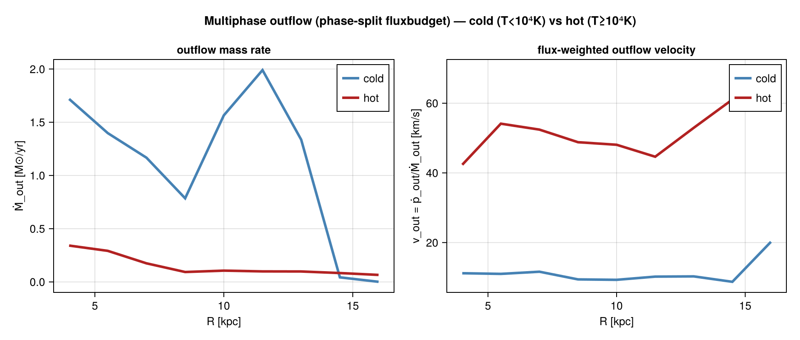
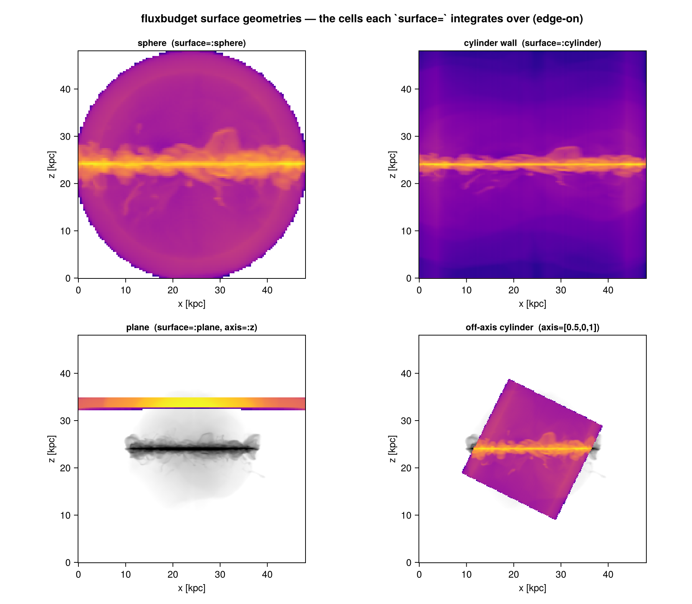
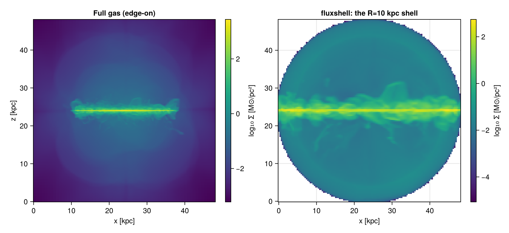
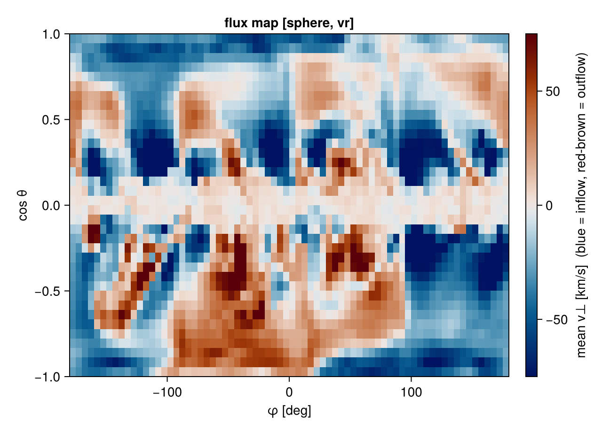
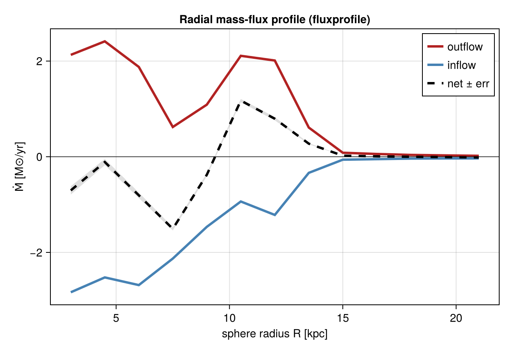

Flux Budgets (inflow / outflow)
This page is also an executable Jupyter notebook — open / download fluxbudget.ipynb. The notebooks run end-to-end and double as part of Mera's test suite.
fluxbudget measures the flux of mass, momentum, energy and metals through a surface (a sphere at radius R, or a cylinder wall), with the surface-normal velocity split into separate inflow and outflow rates — the thin-shell estimator that galactic-feedback and gas-cycle studies otherwise hand-roll for every paper, here as a first-class, conservation-aware primitive.
The estimator is the standard shell sum: for a thin shell of width Δr straddling the surface at radius R, the flux of a carried quantity q is Φ = Σᵢ qᵢ·v⊥ᵢ / Δr, with cells split by the sign of the surface-normal velocity v⊥ (:vr_sphere for a sphere, :vr_cylinder for a cylinder). For a thin shell this approximates the surface integral ∮ q·v⊥ dA. Everything is computed from getvar (with correct per-level AMR cell volumes) and returned in physical rate units.
Basic use
gas = gethydro(getinfo(output, path))
fb = fluxbudget(gas; surface=:sphere, radius=30.0, shell_width=2.0, range_unit=:kpc,
quantities=[:mass, :momentum, :energy, :metals])
fb.rates.mass.out # outflow rate [Msol/yr]
fb.rates.mass.in # inflow rate (≤ 0) [Msol/yr]
fb.rates.mass.net # net = in + out [Msol/yr]
fb.rates.energy.net # net energy flux [erg/s]Units per quantity: mass and metals in Msol/yr, momentum in Msol·km/s/yr, energy in erg/s. in sums cells moving inward (v⊥ < 0), out those moving outward; net = in + out. For mass/metals/energy in ≤ 0 and out ≥ 0; for momentum the carried quantity already contains v⊥ (radial momentum), so both in and out are ≥ 0 — the ram-pressure flux from in- and out-moving gas.
The :metals flux multiplies cell mass by the gas metallicity, read from a column literally named :metallicity. Mera names hydro columns from the hydro_file_descriptor.txt, so a :metallicity column appears only when the descriptor labels a field metallicity; a generically named scalar (e.g. :scalar_00) or a positional :var6 is not treated as metallicity. On a run without a :metallicity column :metals raises a clear error rather than silently returning zero — alias your metal scalar to :metallicity before the call if needed. Likewise :energy needs the thermal energy (pressure :p) and errors clearly on an isothermal/pressureless output.
v⊥ is the peculiar gas velocity; the Hubble flow H(a)·r is not added. At large radius the Hubble term can dominate and even flip the inflow/outflow sign, so the in/out split near turnaround is unreliable on cosmological/zoom runs (a @warn fires). The non-cosmological case is unaffected.
Use surface=:cylinder for the flux through a cylindrical wall (e.g. the edge of a disk):
fc = fluxbudget(gas; surface=:cylinder, radius=15.0, shell_width=1.0, range_unit=:kpc)Choosing the shell width
The estimator assumes the shell is filled by cells (Σm ≈ ρ·4πR²·Δr), so shell_width must be at least the local cell size — ideally a few cells. A shell thinner than the AMR is unphysical: it still grabs whole cells (larger than the band) but divides by the too-small Δr, over-counting the flux. fluxbudget records the shell's median cell_size and warns when shell_width < cell_size; the result's show flags it UNDER-RESOLVED. Pick Δr ≳ the local cell size (use getvar(fluxshell(...), :cellsize, :kpc) to check) and confirm the rate is insensitive to a modest change in Δr.
How the flux is computed (a total, not a mean)
A rate is an integrated total over the surface, not an average of cell values. For every cell i in the thin shell, the carried quantity qᵢ is multiplied by its surface-normal velocity v⊥,ᵢ, and these are summed and divided by the shell width:
flux = ( Σᵢ qᵢ · v⊥,ᵢ ) / Δr # a sum over shell cells, then ÷ shell width
in = Σ over cells with v⊥ < 0 out = Σ over cells with v⊥ ≥ 0 net = in + outThis is the discrete form of the surface integral ∮ q v⊥ dA: summing the cell contributions over the shell volume and dividing by its thickness Δr recovers the area integral. So Δr is the integration thickness, not a smoothing scale — the result is (by construction) ≈ independent of Δr once Δr ≳ a cell size; a wider shell just averages over more cells and so lowers the sampling error, at the cost of radial localization. The carried quantity per cell is
quantity | carried qᵢ | rate unit |
|---|---|---|
:mass | cell mass mᵢ | M⊙/yr |
:metals | mᵢ · Zᵢ (metallicity) | M⊙/yr |
:momentum | mᵢ · v⊥,ᵢ (radial momentum) | M⊙·km/s/yr |
:energy | E_kin,ᵢ + E_therm,ᵢ | erg/s |
There is no built-in mean/median/percentile reduction of the budget itself — it is a sum, because a flux is a total. The statistics live in three companions:
- uncertainty of the total — every rate carries
err_in/err_out/err_net, the sampling standard error of the cell-sum (large when a few cells dominate);bootstrap=Nadds percentile confidence intervalsci_*(see below). - angular breakdown —
fluxmapbins the shell by surface coordinate:quantity=:vris the mass-weighted meanv⊥per (φ, cosθ/z) bin (km/s), whilequantity=:mdotis the per-bin sum of the mass flux (M⊙/yr), whose total equals the budget's net. - per-cell distribution —
fluxshellreturns the shell cells themselves, so you can take any statistic you like (mean/median/std/quantiles ofgetvar(sh, :vr_sphere, :km_s), a phase diagram, …).
Phase decomposition
Pass phases — a NamedTuple of shell→mask functions — for a per-phase breakdown in .components. The phases sum exactly to the total (per quantity and per direction), so a paper can define its phases once and trust the budget closes:
fb = fluxbudget(gas; surface=:sphere, radius=30.0, shell_width=2.0, range_unit=:kpc,
phases = (cold = s -> getvar(s,:T,:K) .< 1e4,
hot = s -> getvar(s,:T,:K) .>= 1e4))
fb.components.cold.mass.out # cold-gas outflow rate
fb.components.hot.mass.out # hot-gas outflow rate
# cold.out + hot.out == fb.rates.mass.out (conservation across the partition)Derived diagnostics: mass loading, phase velocities, weighting
The raw rates combine into the diagnostics outflow studies actually quote:
Mass-loading factor η = Ṁ_out / SFR — pair fluxbudget with sfr_snapshot:
fb = fluxbudget(gas; surface=:sphere, radius=10.0, shell_width=2.0, range_unit=:kpc)
sfr = sfr_snapshot(getparticles(info)).sfr[1] # current SFR [M⊙/yr]
η = fb.rates.mass.out / sfr # mass loading of the outflow (inflow: use .in)Phase outflow velocities — with phases, the mass-flux-weighted normal velocity of each phase is momentum.out / mass.out (Msol·km/s/yr ÷ Msol/yr = km/s), because momentum carries an extra v⊥:
fb = fluxbudget(gas; surface=:sphere, radius=10.0, shell_width=2.0, range_unit=:kpc,
quantities=[:mass, :momentum],
phases=(cold=s->getvar(s,:T,:K).<1e4, hot=s->getvar(s,:T,:K).>=1e4))
η_hot = fb.components.hot.mass.out / sfr # per-phase loading
v_hot = fb.components.hot.momentum.out / fb.components.hot.mass.out # flux-weighted v_out [km/s]This cleanly separates the multiphase wind — a slow, heavy cold fountain from a fast, light hot wind:

Other weightings & statistics. The budget is mass-flux weighted by construction (a flux is Σ q·v⊥), and fluxmap(:vr) gives the mass-weighted mean v⊥ per sky bin. For a volume-weighted (or median, percentile, dispersion …) velocity, take the cells from fluxshell and reduce them yourself — these can differ a lot, so pick the one your science needs:
sh = fluxshell(gas; surface=:sphere, radius=10.0, shell_width=2.0, range_unit=:kpc)
vr = getvar(sh, :vr_sphere, :km_s); m = getvar(sh, :mass, :Msol); V = getvar(sh, :volume, :kpc3)
out = vr .> 0
massw = sum(m[out].*vr[out]) / sum(m[out]) # mass-weighted mean outflow speed
volw = sum(V[out].*vr[out]) / sum(V[out]) # volume-weighted (filling-factor) speed
using Statistics; med = median(vr[out]); p90 = quantile(vr[out], 0.9)Off-axis surfaces (tilted cylinder, plane)
fluxbudget is a 3-D measurement, so the surface can be tilted. A sphere is orientation-free. A cylinder can be aligned to an arbitrary axis — a 3-vector, or :angmom (the gas net angular momentum L = Σ m·h, e.g. a galaxy's spin) — and a :plane surface measures the flux crossing a plane normal to axis (disk in-/outflow):
radius is the location of the surface and shell_width its thickness, but "location" depends on the geometry: for :sphere it is the spherical radius R (shell |r|∈[R±Δr/2]); for :cylinder the cylindrical radius (wall at R_cyl∈[R±Δr/2]); and for :plane it is the signed along-axis offset — the plane sits at axis·r = R (slab ∈[R±Δr/2]), so radius=5, axis=[0,0,1] is a plane 5 kpc above the midplane (use a negative radius for below, radius=0 for the midplane). In each case v⊥ is the velocity component along the surface normal (radial for sphere/cylinder, along axis for the plane).
# disk-edge flux in the angular-momentum frame
fb = fluxbudget(gas; surface=:cylinder, radius=15.0, shell_width=2.0, range_unit=:kpc, axis=:angmom)
# fountain/wind crossing a plane 5 kpc above the disk
fb = fluxbudget(gas; surface=:plane, radius=5.0, shell_width=2.0, range_unit=:kpc, axis=[0.,0.,1.])The four surface choices, made concrete — each panel is the set of cells that fluxbudget integrates over for that geometry, shown edge-on over the same disk galaxy (use fluxshell to extract and visualize any of them):

Off-axis selection is cell-centre based (vs the axis-aligned path's cell-volume intersection), so it differs by ~10–15 % for thin shells — prefer shell_width ≥ a couple of cells. A cylinder's vertical extent defaults to 2·rout; override with height.
Bootstrap confidence intervals
Beyond the analytic standard error, pass bootstrap=N to attach percentile confidence intervals (resampling the shell cells with replacement; reproducible via bootstrap_seed, level set by ci_level, default 0.95):
fb = fluxbudget(gas; surface=:sphere, radius=30.0, shell_width=2.0, range_unit=:kpc, bootstrap=1000)
fb.rates.mass.net, fb.rates.mass.ci_net # e.g. 0.03, (-1.94, 1.86) → consistent with balanceEach rate gains ci_in/ci_out/ci_net (lo, hi) (≈ NaN without bootstrap).
Visualizing the shell
fluxshell returns the exact thin shell that fluxbudget measured, as an ordinary HydroDataType — so you can see what was measured. Project it (it appears as a ring/annulus), or map the surface-normal velocity to see where on the shell gas flows in (< 0) versus out (> 0):
sh = fluxshell(gas; surface=:sphere, radius=30.0, shell_width=2.0, range_unit=:kpc)
projection(sh, :sd, :Msol_pc2; center=[:bc]) # the shell as a ring/annulus
projection(sh, :vr_sphere, :km_s; center=[:bc]) # inflow (blue) / outflow (red) over the shell
# combine with a Makie backend to render the maps, or feed sh to profile/phase
fluxshell and fluxbudget use the identical selection, so the visualization is guaranteed to show exactly the cells that entered the budget. fluxshell and fluxmap accept the same axis/:angmom and surface=:plane options as fluxbudget, so off-axis surfaces can be visualized too (the tilted fluxmap unrolls the cylinder about n̂ as a (φ′, z′) map, and its :mdot map still sums to the tilted budget).
The surface map (fluxmap)
projection of the shell flattens it onto a Cartesian plane and superposes the near and far side. For the true "where on the surface does gas flow in vs out" picture, fluxmap bins the shell by surface coordinates — (φ, cosθ) for a sphere (an equal-solid-angle sky map), (φ, z) for a cylinder (the wall unrolled) — so each cell sits at its own location, no superposition:
fm = fluxmap(gas; surface=:sphere, radius=30.0, shell_width=2.0, range_unit=:kpc, quantity=:vr)
fm.map # nφ × ncosθ map of mean v⊥ [km/s] — heatmap it (red = outflow, blue = inflow)
fmd = fluxmap(gas; surface=:sphere, radius=30.0, shell_width=2.0, range_unit=:kpc, quantity=:mdot)
sum(fmd.map) # == fluxbudget(...).rates.mass.net — the surface map closes to the budgetquantity=:vr maps the mass-weighted mean normal velocity (inflow < 0, outflow > 0); quantity=:mdot maps each bin's mass-flux contribution (Msol/yr), and its sum equals the net flux. fluxmap returns the arrays; it is not projection — different axes, no LOS superposition.

With a Makie backend loaded, fluxmapplot renders it directly (perceptually-uniform diverging :vik, blue-in/red-out, symmetric range clipped at the clip percentile — default 0.95 — so a few extreme cells don't wash out the contrast):
using CairoMakie
fig = fluxmapplot(fluxmap(gas; surface=:sphere, radius=30.0, shell_width=2.0, range_unit=:kpc))
Makie.save("flux_skymap.png", fig)Statistics: uncertainty and the radial profile
Two ways to improve the statistics of a flux measurement, both built in:
More cells per shell — a wider shell_width puts more cells in the sum (the standard statistics-vs-localization tradeoff). Note fluxbudget does the cell-by-cell sum Σ mᵢ·v_r,i, which captures the density–velocity correlation exactly — not ⟨ρ⟩·⟨v_r⟩ over the shell, which would lose that correlation and bias the answer.
Sampling uncertainty — each rate carries err_in/err_out/err_net: the shot-noise standard error of the cell-sum. It is large when a few cells dominate the flux (an under-resolved or sparsely-sampled shell), so it tells you when a number is trustworthy:
fb = fluxbudget(gas; surface=:sphere, radius=30.0, shell_width=2.0, range_unit=:kpc)
fb.rates.mass.net, fb.rates.mass.err_net # e.g. 0.03 ± 0.96 → consistent with balanceRadial flux profile — fluxprofile runs the budget across many radii at once, so you see where the flux is launched or converges and can pick a converged radius/width:
fp = fluxprofile(gas; surface=:sphere, radii=5:5:50, shell_width=2.0, range_unit=:kpc)
fp.radius, fp.net, fp.err_net # net Ṁ(R) ± sampling error [Msol/yr]
# e.g. net < 0 in the disk (inflow) → net > 0 in the halo (outflow); a huge err flags a bad shell
For the dominant snapshot-to-snapshot noise, time-average instead (see below).
Time evolution
fluxtimeseries maps fluxbudget over a snapshot series and assembles the rate versus time — the inflow/outflow history through a fixed surface:
loadfn = o -> gethydro(getinfo(o, "/sim"), verbose=false)
fts = fluxtimeseries(loadfn, 100:10:300, :sphere; radius=30.0, shell_width=2.0, range_unit=:kpc)
fts.t, fts.out, fts.in, fts.net # time [Myr] and the rate history [Msol/yr]Definition & correctness
The estimator is intentionally explicit and recorded on the result (surface, radius, shell_width, center) so the methodological choice is reproducible. The thin-shell estimator is verified against the analytic surface integral ∮ ρ v⊥ dA = 4πR²ρv⊥ (it converges as O((Δr/R)²)), the inflow/outflow split and net = in + out are exact, and the phase decomposition sums to the total — all guarded by the test suite, in the same spirit as Mera's projection/covering-grid conservation oracles.
API
The functions fluxbudget, fluxprofile, fluxtimeseries, fluxshell, fluxmap, fluxmapplot and the result types FluxBudgetType / FluxMapType are documented in the API reference. See also shellregion (the shell selection underneath) and Profiles & Phase Diagrams.